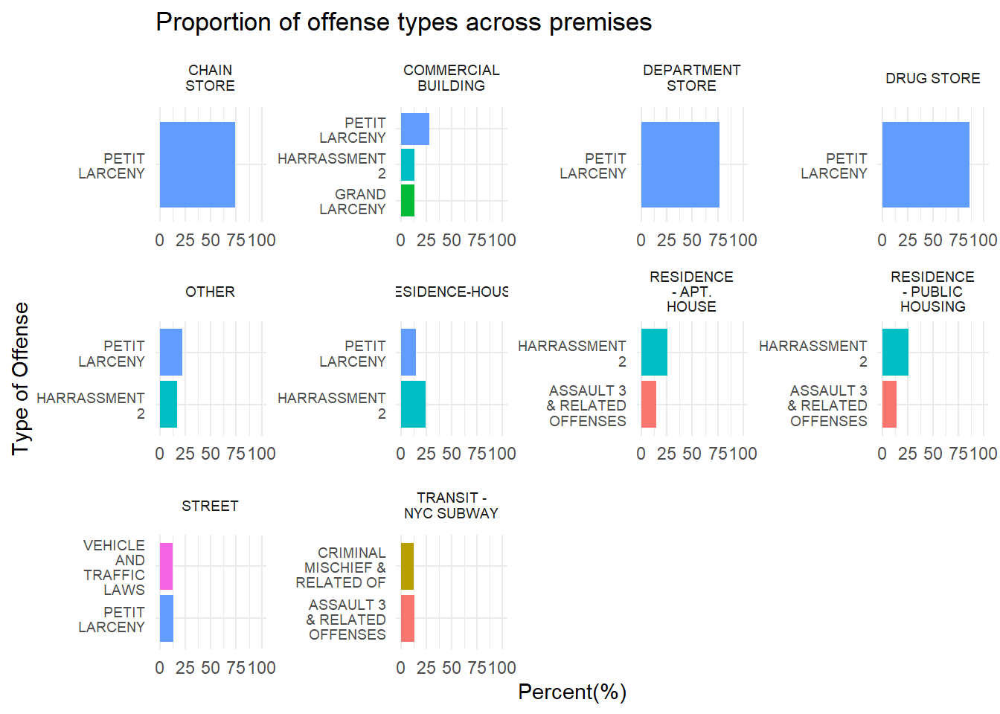

ggplot(df, aes(x = Month, fill =fct_rev(factor(LAW_CAT_CD)))) +geom_bar() +labs(title ="Crimes per month", x ="Month", y ="Frequency", fill ="Severity") +scale_fill_manual(values =c("#BF0000", "#7F0000", "#3B0000"))
Chi-squared test for given probabilities
data: month_contingency_table
X-squared = 1538.1, df = 8, p-value < 2.2e-16
Code
ggplot(df, aes(x =factor(Hour), color = LAW_CAT_CD, group = LAW_CAT_CD)) +geom_point(stat ="count", size =3) +geom_line(stat ="count", aes(group = LAW_CAT_CD), size =1) +labs(title ="Crimes over time",x ="Time (Hour)", y ="Count", fill="Severity") +scale_color_manual(values =c( "#3B0000", "#AF0000", "#FF0000")) +scale_x_discrete(breaks =seq(0, 24, by =5), labels =function(x) sprintf("%02d:00", as.numeric(x))) +theme_minimal()
Warning: Using `size` aesthetic for lines was deprecated in ggplot2 3.4.0.
ℹ Please use `linewidth` instead.
2022 population estimates were taken from: https://www.nyc.gov/site/planning/planning-level/nyc-population/nyc-population-current-estimates.page
Code
value_counts <-table(df$BORO_NM)count_df <-data.frame(Category =names(value_counts), Count =as.numeric(value_counts))population <-c(1379946, 2590516, 1596273, 2278029, 491133)count_df$Pop <- populationcount_df$CrimePerPop <- count_df$Count*100/ count_df$Popcount_df <- count_df[count_df$CrimePerPop >0,]count_df <- count_df[order(count_df$CrimePerPop), ]# ggplot(count_df, aes(x = CrimePerPop, y = reorder(Category, CrimePerPop))) +# geom_bar(stat = "identity", fill = "skyblue") +# labs(title = "Ratio of Crimes to population by Borough",# x = "Crime/Capita ()",# y = "Borough") +# theme_minimal()crime_counts <- df %>%group_by(BORO_NM, LAW_CAT_CD) %>%summarise(CrimeCount =n()) %>%ungroup()
`summarise()` has grouped output by 'BORO_NM'. You can override using the
`.groups` argument.
Code
colnames(crime_counts)[colnames(crime_counts) =="BORO_NM"] <-"Category"crime_counts <-merge(crime_counts, count_df, by='Category', all.x=TRUE)crime_counts <- crime_counts[, c('Category', 'LAW_CAT_CD', 'CrimeCount', 'Pop')]crime_counts <- crime_counts[!crime_counts$Category %in%NA,]crime_counts$CrimePerPop <-100000*crime_counts$CrimeCount/crime_counts$Popggplot(crime_counts, aes(x = CrimePerPop, y =reorder(Category, CrimePerPop), fill =fct_rev(LAW_CAT_CD))) +geom_bar(stat ="identity") +labs(title ="Crime per Capita by Borough",x ="Crime per Capita",y ="Borough",fill ="Severity") +scale_fill_manual(values =c( "#FF0000", "#AF0000", "#3B0000"))+theme_minimal()
Code
value_counts <-table(df$LAW_CAT_CD)count_df <-data.frame(Category =names(value_counts), Count =as.numeric(value_counts))count_df <- count_df[count_df$Count >0,]ggplot(count_df, aes(y = Count, x = Category)) +geom_bar(stat ="identity", fill ="skyblue") +labs(title ="Frequency of Crimes by Severity",y ="Frequency",x ="Crime Severity") +theme_minimal()
According to nycourts.gov and nyc.gov, these are the definitions of the different severity levels: https://www.nycourts.gov/courthelp/criminal/typesCriminalCases.shtml https://www.nyc.gov/site/nypd/services/victim-services/glossary.page
Violation: Any non-criminal offense, other than traffic infractions. An offense punishable by up to a $250 fine or up to 15 days in jail. Examples of common violations include disorderly conduct and trespassing.
Misdemeanor: A misdemeanor is the lowest level of crime. It is more serious than a violation, but less serious than a felony. It is a crime punishable by probation, a fine, or up to one year in jail.
Felony: The most serious types of crimes. Examples of felonies include murder, rape, robbery, arson, and selling/possessing controlled substances. It is punishable by imprisonment for more than one year, or as long as life imprisonment.
Larceny more likely to occur during the day when stores are open. Same with harassment since there are more people walking around.
Code
value_counts <-table(df$PREM_TYP_DESC)count_df <-data.frame(Category =names(value_counts), Count =as.numeric(value_counts))count_df <- count_df[count_df$Count >7000,]count_df <- count_df[order(count_df$Count), ]# ggplot(count_df, aes(x = Count, y = reorder(Category, Count))) +# geom_bar(stat = "identity", fill = "skyblue") +# labs(title = "Frequency of Crimes at Premise Type",# x = "Frequency",# y = "Premise Type") +# theme_minimal() count_premise_df <- df %>%count(PREM_TYP_DESC)filtered_df <- count_premise_df[count_premise_df$n >7000, ]filtered_df <- filtered_df %>%na.omit()df$PREM_TYP_DESC <-fct_rev(fct_infreq(df$PREM_TYP_DESC))ggplot(df[df$PREM_TYP_DESC %in% filtered_df$PREM_TYP_DESC,], aes(y = PREM_TYP_DESC, fill =fct_rev(factor(LAW_CAT_CD)))) +geom_bar() +labs(title ="Frequency of Crimes at Premise",x="Frequency", y ="Premise Type", fill ="Severity") +scale_fill_manual(values =c("#FF0000", "#AF0000", "#3B0000"))
Code
value_counts <-table(df[, c("OFNS_DESC", "PREM_TYP_DESC")])count_df <-data.frame(value_counts)result <- count_df %>%group_by(PREM_TYP_DESC) %>%summarise(total_value =sum(Freq))count_df <-merge(count_df, result, by ="PREM_TYP_DESC")count_df$ratio <- count_df$Freq*100/ count_df$total_valuecount_df <- count_df[count_df$total_value >7000,]count_df <- count_df[count_df$ratio >12,]count_df$OFNS_DESC <-str_wrap(count_df$OFNS_DESC, width =10)count_df$PREM_TYP_DESC <-str_wrap(count_df$PREM_TYP_DESC, width =10)ggplot(count_df, aes(x = ratio, y = OFNS_DESC, fill = OFNS_DESC)) +geom_bar(stat ="identity", position ="dodge") +facet_wrap(~PREM_TYP_DESC, scales ="free",ncol =4) +labs(title ="Proportion of offense types across premises", x ="Percent(%)", y ="Type of Offense") +theme_minimal() +theme( strip.text =element_text(size =7), axis.text.y =element_text(size =7) ) +guides(fill =FALSE) +coord_cartesian(xlim =c(0, 100))
Warning: The `<scale>` argument of `guides()` cannot be `FALSE`. Use "none" instead as
of ggplot2 3.3.4.

Code
# susp_sex_df <- df[df$SUSP_SEX != 'U',]# mosaicplot(table(susp_sex_df$LAW_CAT_CD, susp_sex_df$SUSP_SEX), main = "Mosaic Plot of Suspect Age and Crime Category", color = c("salmon", "lightblue"))